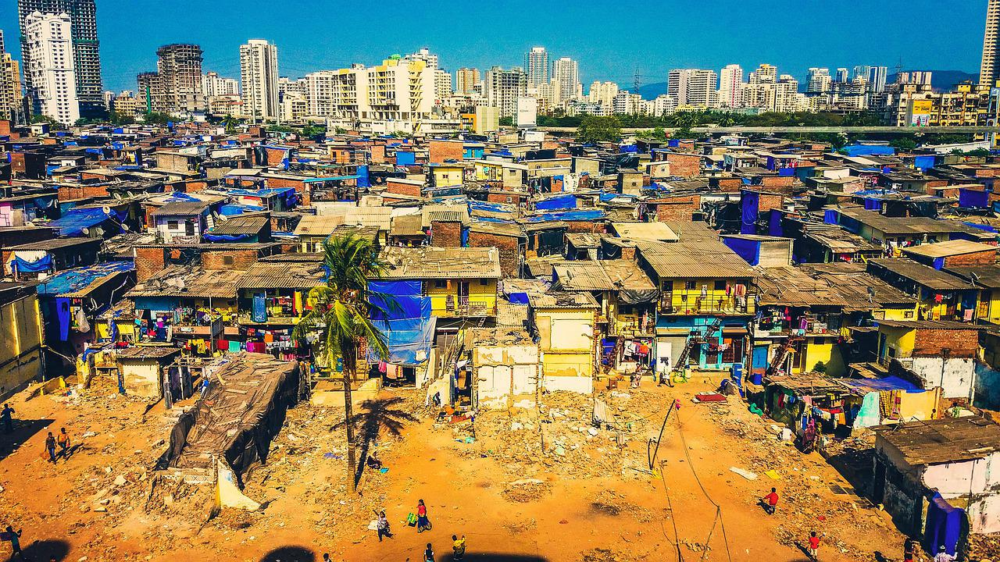

Homelessness is a complex problem; the circumstances of homeless people vary greatly. Homelessness is sometimes a product of shortage of houses, but in some cases homelessness is caused due to other reasons also.
Urban sprawl or real expansion of the cities, both in population and geographical area, of rapidly growing cities
is the root cause of urban problems. In most cities the economic base is incapable of dealing with the problems
created by their excessive size. Massive immigration from rural areas as well as from small towns into big cities
has taken place almost consistently; thereby adding to the size of cities.
The first large flow of migration from rural to urban areas was during the “depression” of late 1930s when people
migrated in search of jobs. Later, during the decade 1941-51, another a million persons moved to urban places in
response to wartime industrialisation and partition of the country in 1947.
During 1991-2001, well over 20 million people migrated to cities. The greatest pressure of the immigrating
population has been felt in the central districts of the city (the old city) where the immigrants flock to
their relatives and friends before they search for housing. Population densities beyond the “old city” decline sharply.
Brush (1968) has referred to this situation in the central parts of the cities as “urban impulsion” which results
from concentration of people in the centre of the city close to their work and shopping. Incidentally many of the
fastest growing urban centres are large cities.

Slum upgrading. It improved living conditions. But it does not address poverty and low wages of the informal economy.
Organized urbanization : Planning & Modifying urban areas to accommodate newcomers.
Legitimizing slums instead of driving them out of their homes.
Improving job opportunities in rural as well as urban areas.
Planning rural development along with urban development.
Economic development.
Better transport facilities.
Affordable housing in urban areas.